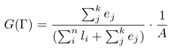
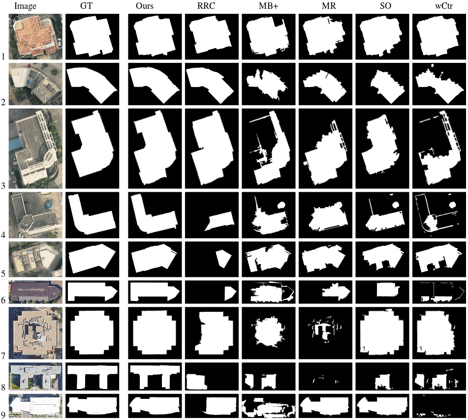
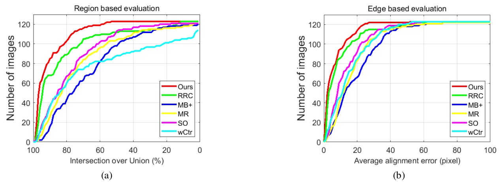
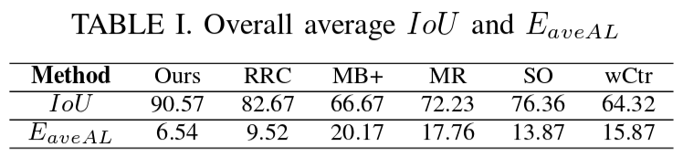

Accurate Outline Extraction of Individual Building from Very High Resolution Optical Images
Xuebin Qin1, Shida He1, Xiucheng Yang3, Masood Dehghan1, Qiming Qin2 and Martin Jagersand1
1. Department of Computing Science, University of Alberta, Edmonton, AB, Canada, T6G 2R3.
2. Institute of Remote Sensing and Geographic Information System, Peking University (IRSGIS, PKU), Beijing, P.R. China, 100871.
3. ICube Laboratory, University of Strasbourg, Strasbourg, France, 67081.
ABSTRACT
In this paper, we present a novel approach for extracting accurate outlines of single buildings from Very-High Resolution (VHR, 0.1-0.4 m) images. Building outlines are defined as polygons here. Our approach operates on a set of straight line segments that are detected by a line detector. It groups a subset of detected line segments and connects them to form a closed polygon. Particularly, we define a new grouping cost and construct an undirected graph G(V,E) based on endpoints of those extracted line segments. The closed boundary extraction problem is then formulated as a problem of searching a special graph cycle which satisfies certain grouping cost. To solve the graph cycle searching problem, we adapt the "Bidirectional Shortest Path (BDSP)" method. We validated our method on a newly created dataset which contains 123 images of different building roofs. The experimental results with average Intersection-over-Union of 90.56% and average alignment error of 6.56 pixels demonstrate that our approach is robust to different shapes of building roofs and outperforms state-of-the-art methods on our dataset.
1. Methodology
In this paper, we propose a novel perceptual grouping cost:
where ej denotes the length of a gap between two sequentially connected line segments and ∑kj ej is the total gap length along a closed polygon, li indicates the length of a line segment and (∑nili + ∑kjej)is the perimeter of the polygon and A is the area of the polygon. The closed polygon with the smallest G(Γ) is taken as the final optimal outline.
Then we built a weighted undirected graph based on the detected line segments using Delaunay Triangulation, as shown in (a)-(c) of Fig. 1. The optimal cycle is searched from this graph via our recently proposed "Bi-Directional Shortest Path (BDSP)" algorithm, see (d) in Fig. 1.

Fig. 1. Graph construction and optimization
2. Experimental Results
To assess the performance of our approach, we built a dataset for building outline extraction on VHR aerial and satellite images of urban areas. The resolution of these images varies from 0.1-0.4 m. The dataset contains 123 images of buildings with different shapes. The accurate Ground Truth (GT) is manually labeled for all the images. We conduct our experiments on this dataset and compare the results with other five methods: RRC, MB+, MR, SO, wCtr.
Fig. 2. Sample results of different methods: the first column is the original image, the second column is the ground truth, the third column is the result of our method, column four to column eight are results produce by RRC, MB+, MR, SO, wCtr.

Fig. 3. Region and edge based evaluations. (a) Region based evaluation: number of images where the IoU is greater than certain threshold. (b) Edge based evaluation: number of images where the EaveAL is less than certain threshold.

3. RESOURCES
Download: Matlab Code and Dataset